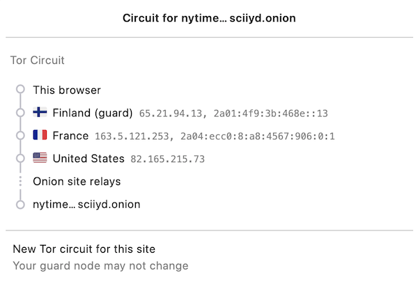
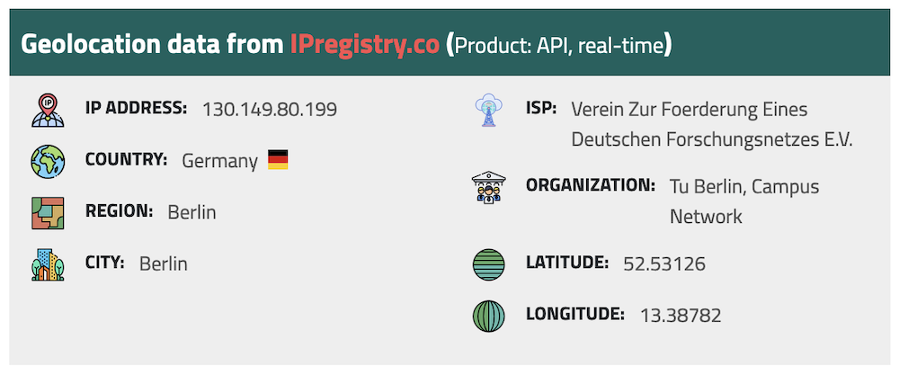

Anwendungsunabhängiger low-latency Anonymisierungsdienst für TCP-Verbindungen, der den Standort und die IP des Nutzers verschleiert
Typische Anwendung: anonymes Surfen im Internet und Instant Messaging (z. B. Briar)
Frei und Open Source
gegründet 2002, öffentlich nutzbar seit 2003, Code seit 2004 frei verfügbar
Baut ein Overlay-Netzwerk auf
Grundlegendes Prinzip: Onion Routing
Die Verzögerung durch die Anonymisierung ist so gering, dass Tor für Instant Messaging und das Surfen im Internet verwendet werden kann.
Tor baut ein eigenes Netzwerk auf, welches auf dem Internet aufsetzt. Die Verbindungen zwischen den Tor-Knoten werden von Tor zusätzlich verschlüsselt.
legale/intendierte Nutzungen: Nutzer mit allg. Datenschutzbedürfnissen, Whistleblowers, Dissidenten, Journalisten, ...
illegale Zwecke (Darknet).
Es wird geschätzt, dass etwa 80% des Datenverkehrs im Zusammenhang mit dem Zugriff auf Kinderpornografie steht. Solche Schätzungen sind allerdings mit Vorsicht zu genießen!
Mehrere Sicherheitslücken wurden in der Vergangenheit gefunden und geschlossen. Die Angriffe [1] waren:
DoS Attacken
Deanonymisierungsattacken
Identifikation von Onion Services (aka Hidden Services)
[Sicherheitslücke gefunden in 2013] Wenn ein einzelner Nutzer Tor über einen längeren Zeitraum [3 bis 6-Monate, abhängig von einigen Faktoren] regelmäßig nutzt, ist es fast sicher, dass er de-anonymisiert werden kann.
[Übersetzt mit DeepL.]
—https://www.infosecurity-magazine.com/news/tor-is-not-as-safe-as-you-may-think/
Surface web vs. Deep web vs. Dark web
Die grundlegende Idee ist es eine Trennung zwischen der Quelle und dem Ziel des Datenverkehrs zu schaffen.
Der Datenverkehr wird über mehrere Knoten (Relays) umgeleitet, die jeweils nur den vorherigen und den nächsten Knoten kennen. Der Weg den ein Datenpaket nimmt, wird als Circuit oder Path bezeichnet.
Der Pfad wird dazu vorher ausgewählt und der gesamte Datenverkehr entsprechend des Pfades verschlüsselt.
Tor bietet Anonymität auch für die Serverseite durch Onion Services (auch Hidden Services), die nur über eine von Tor vergebene Onion-Adresse erreicht werden können.
Tor bietet Schutz for folgenden Angreifern: Einem Angreifer dem es gelingt ...
einen Teil der Kommunikation zu beobachten und
nur einen Teil der Tor-Knoten zu kontrollieren, indem er entweder einen eigenen Tor-Knoten (Relay; früher Onion-Router) betreibt oder einen bereits laufenden Knoten kompromittiert.
Rechner, die das Tor-Netzwerk bilden. Es gibt drei Arten von Tor-Knoten:
Entry Nodes (auch Guard Nodes): Diese Knoten sind die ersten Knoten in der Kette. Sie kennen die IP-Adresse des Clients. Sie können den Datenverkehr nicht entschlüsseln. Sie können aber sehen, dass der Datenverkehr von einem bestimmten Client kommt.
Middle Nodes: Diese Knoten sind die mittleren Knoten in der Kette. Sie kennen weder die IP-Adresse des Clients noch die IP-Adresse des Ziels. Sie können den Datenverkehr nicht entschlüsseln. Sie können aber sehen, dass der Datenverkehr von einem bestimmten Entry Node kommt und an einen bestimmten Exit Node geht.
Exit Nodes: Diese Knoten sind die letzten Knoten in der Kette. Sie kennen die IP-Adresse des Ziels. Sie können den Datenverkehr entschlüsseln. Sie können aber nicht sehen, von welchem Entry Node der Datenverkehr kommt.
Bridge Nodes: Diese Knoten sind Entry Nodes, die nicht bzw. nicht vollständig öffentlich bekannt. Diese dienen ggf. dazu in Ländern, in denen Tor blockiert wird, den Zugang zu Tor zu ermöglichen. Sollte eine Verbindung zu einer Bridge nicht hergestellt werden können, aufgrund der Struktur der Nachrichten - zum Beispiel aufgrund der Verwendung von Deep Packet Inspection - dann ist es möglich diese mit Hilfe von Pluggable Transports zu verschleiern.
besteht aus mehreren tausend Tor-Knoten. Viele Knoten sind freiwillig betriebene Knoten.
Ein Circuit besteht typischerweise aus drei Knoten: Entry Node, Middle Node und Exit Node. Mehr Knoten sind möglich, haben jedoch nur einen geringen Einfluss auf die Sicherheit. Die Übertragung der Daten zwischen diesen Knoten erfolgt verschlüsselt. In welcher Form die Daten vom Exit Node zum Ziel übertragen werden, ist nicht Teil von Tor. Hat der Client eine verschlüsselte Verbindung initiiert (HTTPS), dann ist auch der Datenverkehr zwischen dem Exit Node und dem Ziel (noch) verschlüsselt ansonsten nicht und der Exit Node kann den Datenverkehr lesen.
Knoten, die die Liste der aktiven Tor-Knoten verwalten. Diese Liste wird von allen Tor-Knoten regelmäßig in Hinblick auf das Consensus Document bzgl. der Knoten und deren Eigenschaften sowie Zustand abgefragt. Das Consensus Document wird von den Directory Authorities einmal pro Stunde gemeinsam erstellt und beschreibt die relevanten Eigenschaften jedes Tor-Knotens. Die Authentizität des Consensus Document wird durch die Signaturen der Directory Authorities nachgewiesen.
Es gibt (Stand 2023) 9 Directory Authorities.
bedeutet, dass die Datenpakete mehrfach verschlüsselt werden. Jeder Tor-Knoten kann nur die Verschlüsselungsschicht entfernen, für die er den Schlüssel hat. Die Schlüssel werden mit dem Client während des Aufbaus des Circuits ausgehandelt. Es gibt für jeden Tor-Knoten einen eigenen Schlüssel und die Nachrichten werden in umgekehrter Reihenfolge der Tor-Knoten entlang des Pfades verschlüsselt. d. h. die Verschlüsselung für den Entry Node wird als letztes angewendet, da diese als erstes entfernt wird.
sind die Datenpakete, die zwischen den Tor-Knoten ausgetauscht werden. Cells sind immer 512Byte groß, um es unmöglich zu machen anhand der Größe der Datenpakete Rückschlüsse auf die Daten zu ziehen.
Jeder Tor-Knoten verfügt über mehrere Keys. Für den Aufbau der Verbindung werden die Onion Keys verwendet. Mit Hilfe dieser werden die initialen Datenpakete mittels Public-Key Kryptografie verschlüsselt. Dies wird benötigt, um den AES Key - einer pro Knoten - der für den eigentlichen Versand benötigt wird, auszuhandeln und sicher zu übertragen.
In der Grafik wird der Aufbau eines Circuits mit zwei Tor-Knoten dargestellt. Der Client kennt die Onion Keys der Tor-Knoten (OR1 und OR2). Die Onion Keys werden verwendet, um die Create Zelle zu verschlüsseln. Der Entry Node verwendet diese Onion Keys um die Create Zelle zu entschlüsseln und den gemeinsamen Schlüssel zu erzeugen. Um einen längeren Pfad aufzubauen, muss der Client ggf. einfach mehrere Extend Nachrichten versenden. Erhält ein Knoten eine Relay Nachricht, dann kann der Knoten diese mit dem mit ihm ausgehandelten AES Key entschlüsseln und die Nachricht weiterleiten. Er kann den Inhalt (zum Beispiel eine weitere Relay Nachricht oder eine Extend Nachricht) nicht lesen.
Flags
Beschreibung jedes Tor-Knotens in Hinblick auf die Rolle des Knotens im Tor-Netzwerk. Zum Beispiel: kann der Knoten als Entry Node verwendet werden? Ist der Knoten schnell genug um als Exit Node verwendet zu werden?
Auszug wichtiger Flags:
Ein Router ist ein v2 Hidden Service Directory
Eine Authority konnte sich innerhalb der letzten 45 Minuten mit dem Router verbinden.
die gewichtet Zeit zwischen zwei Fehlern (weighted MTBF) ist größer als 7 Tage oder größer als der Median aller aktiven Router.
eine Version von Tor wird ausgeführt, die von den Authorities als aktuell angesehen wird und keine bekannten Schwachstellen aufweist.
Viele Tor Relays werden von Freiwilligen betrieben
In Deutschland gibt es viele Relays
Hetzner ist diesbezüglich beliebt...
... und deswegen steht Hetzner auf der Liste der zu vermeidenden Hoster (Stand Jan. 2024).
Ein Tor-Knoten wird as schnell (fast) eingestuft, wenn er aktiv ist und eine Bandbreite von mindestens 100KB/s hat oder unter den Top 7/8tel aller bekannten aktiven Router ist.
Zum Vergleich: Die durchschnittliche Bandbreite in Deutschland ist 80Mbit/s (cf. Statista).
(Stand Jan. 2024)
Pfade, die über die ganze Welt gehen verhindern, dass der Entry- und Exit-node beim gleichen Anbieter liegen.
Jan. 2024 - zu vermeidende Hoster:
Frantech / Ponynet / BuyVM (AS53667)
OVH SAS / OVHcloud (AS16276)
Online S.A.S. / Scaleway (AS12876)
Hetzner Online GmbH (AS24940)
IONOS SE (AS8560)
netcup GmbH (AS197540)
Psychz Networks (AS40676)
1337 Services GmbH / RDP.sh (AS210558)Die Anzahl der Exit nodes ist deutlich kleiner (2. Jan. 2024 - 1314 Einträge) als die Anzahl der Knoten. Dies liegt daran, dass die technischen Anforderungen höher sind (z. B. stabile IP Adressen) und insbesondere daran, dass die Betreiber der Exit nodes darauf vorbereitet sein müssen ggf. (zahlreiche) Anfragen von den Behörden zu bekommen. [2]
Reverse IP Lookup für 130.149.80.199 durchgeführt mit IP Location Service.
Jeder Node legt in seiner Exit Policy genau fest welchen Datenverkehr weiterleiten möchte:
Es gibt offene Exit Nodes, die alle Anfragen weiterleiten.
Es gibt Knoten, die die Daten nur an weitere Tor-Knoten weiterleiten.
Es gibt Knoten, die nur bestimmte Dienste (z. B. HTTPs) weiterleiten.
Es gibt private Exit Nodes, die nur zu einem bestimmten Netz Verbindungen aufbauen.
Server, die Anfragen nur aus dem Tor-Netzwerk annehmen, werden als Onion Services (bzw. Hidden Services) bezeichnet.
.onion ist eine Pseudo-Top-Level-Domain, die für Onion Services verwendet wird.
Onion Services können nur über das Tor-Netzwerk erreicht werden.
Onion-Adresse der New-York-Times im Tor Netzwerk: https://nytimesn7cgmftshazwhfgzm37qxb44r64ytbb2dj3x62d2lljsciiyd.onion (Aus Deutschland faktisch nicht nutzbar.)
Standardanwendung für den Zugriff auf das Tor-Netzwerk.
Ergebnis nach mehreren Minuten Wartezeit und zwei Versuchen überhaupt eine Verbindung aufzubauen.
Sicherheitseinstellungen des Tor Browsers
alle Browserfunktionen sind aktiviert.
JavaScript ist auf Nicht-HTTPS-Seiten deaktiviert. Wenn JavaScript aktiviert ist, dann sind die Leistungsoptimierungen deaktiviert. Audio und Video (HTML5-Medien) sowie WebGL werden nur nach Mausklick abgespielt.
(zusätzlich) JavaScript ist immer deaktiviert. Einige Schriftarten, Symbole, mathematische Symbole und Bilder sind deaktiviert.
Das Tor-Netzwerk erlaubt ggf. das Setzen des Exit Nodes, um zum Beispiel geografische Sperren zu umgehen. Entsprechende Dienstanbieter können dies jedoch leicht erkennen, da die Knoten des Tor Netzwerkes bekannt sind (https://check.torproject.org/torbulkexitlist) und verweigern dann den Zugriff.
Schützt vor der Analyse des Datenverkehrs.
Von SecureDrop wird zum Beispiel für Whistleblower empfohlen sich mit dem SecureDrop Service über Tor zu verbinden und erst dann Dokumente hochzuladen.
Tor Browser schützt relativ effektiv vor Website-Fingerprinting.
Teilweise sehr langsam (insbesondere bei Onion Services).
Monitoring des Netzwerks ist an den Grenzen möglich.
Ende-zu-Ende Korrelation von Datenverkehr ist möglich.
Die Anonymität hängt auch von der Anzahl der Nutzer ab.
Website Fingerprinting
Website Fingerprinting ermöglicht es die besuchten Websites anhand des Datenverkehrs zu identifizieren. Dabei wird nicht der Inhalt der Datenpakete analysiert, sondern die statistischen Eigenschaften des Datenverkehrs. Wie groß sind die Datenpakete (d. h. die ausgelieferten Dateien)? Wie viele Datenpakete werden wann verschickt? Wie lange dauert es bis ein Datenpaket verschickt wird (d. h. Geschwindigkeit der Webseite)? Wie lange dauert es bis ein Datenpaket ankommt?
(Cross-)Browser Fingerprinting
Durch das Sammeln vieler (auch kleiner) Informationen über den/die Browser und das Betriebssystem kann ein für praktische Zwecke hinreichend eindeutiger Fingerabdruck erstellt werden. Dieser kann dann zur Identifikation des Nutzers verwendet werden.
Kleiner Auszug aus den möglichen Informationen:
System Fonts
Werden Cookies unterstützt?
Betriebssystem
Betriebssystem Sprache
Keyboard layout
Art/Version des Browsers
verfügbare Sensoren: Beschleunigungssensor, Näherungssensor, Gyroskop
verfügbare Browser Plugins
HTTP-Header Eigenschaften
CPU Klasse
HTML 5 Canvas Fingerprinting
Unterstützung von Multitouch
Monitoring des Netzwerks an den Grenzen
Hat in der Vergangenheit dazu geführt, dass Nutzer von Tor-Netzwerken identifiziert werden konnten.
Ende-zu-Ende Korrelation von Datenverkehr
Auch als Traffic Confirmation bekannt. Diese Art von Attacke ist möglich, wenn Relays am Anfang und am Ende der Verbindung kontrolliert werden. Die Angreifer können dann den Datenverkehr an beiden Enden beobachten und die Datenpakete korrelieren z. B. basierend auf statistischen Informationen über die Zeitpunkte und Volumen von Datenflüssen.
Onion Services
Ist es für Onion Services (.onion) notwendig auf HTTPS zu setzen oder reicht HTTP für eine sichere Kommunikation? Ist die Verwendung von HTTPS ggf. sogar problematisch?
TOR und DNS Lookups
Warum führt der Tor Browser keine DNS Lookups durch? Warum ist dies wichtig und wer kann/muss es stattdessen machen?
TOR abschalten?
Warum hätte das Abschalten von TOR auf kriminelle Aktivitäten im Internet vermutlich nur einen geringeren Einfluss?
Wie vergleichen sich Proxies und Tor-Knoten?
Wie unterscheidet sich Tor von einem VPN?
Tor über VPN oder VPN über TOR?
Macht es Sinn ein VPN über Tor oder anders herum zu betreiben?
Kontrolle über TOR Netzwerk?
Was passiert, wenn eine Angreifer in der Lage ist \(50\% + 1\) der Directory Authority Server zu kontrollieren?